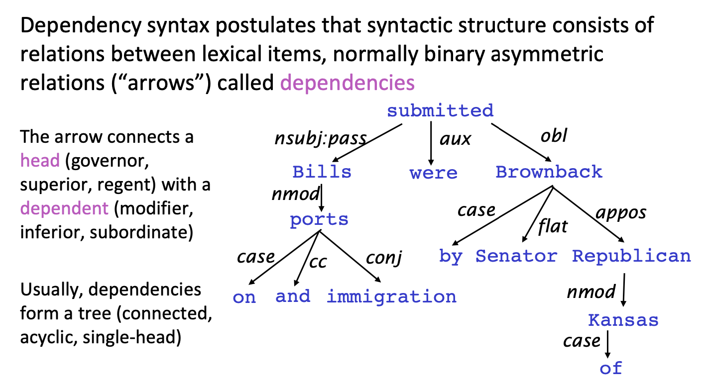

the course note of deependency parsing and the details of assignment 3
Dependency Grammar and Dependency Structure
Parse trees in NLP, analogous to those in compilers, are used to analyze the syntactic structure of sentences. There are two main types of structures used: 1. constituency structures 2. dependency structures
Dependency structure of sentences shows which words depend on (modify or are arguments of) which other words. These binary asymmetric relations between the words are called dependencies and are depicted as arrows going from the head (or governor, superior, regent) to the dependent (or modifier, inferior, subordinate). Usually these dependencies form a tree structure. They are often typed with the name of grammatical relations (subject, prepositional object, apposition, etc.). An example of such a dependency tree is shown in below

Figure from cs224n
Usually some constraints: 1. Only one word is adependent of ROOT 2. Don’twantcyclesA->B,B->A (tree structure) 3. Final issue is whether arrows can cross (non-projective) or not - Defn: There are no crossing dependency arcs when the words are laid out in their linear order, with all arcs above the words - Dependencies parallel to a CFG tree must be projective: Forming dependencies by taking 1 child of each category as head - But dependency theory normally does allow non-projective structures to account for displaced constituents: You can’t easily get the semantics of certain constructions right without these non-projective dependencies
Parsing
Given a parsing model M and a sentence S, derive the optimal dependency graph D for S according to M.
Dynamic programming Eisner (1996) gives a clever algorithm with complexity O(n3), by producing parse items with heads at the ends rather than in the middle
Graph algorithms You create a Minimum Spanning Tree for a sentence McDonald et al.’s (2005) MSTParser scores dependencies independently using an ML classifier (he uses MIRA, for online learning, but it can be something else)
Constraint Satisfaction Edges are eliminated that don’t satisfy hard constraints. Karlsson (1990), etc.
Transition-based parsing or deterministic dependency parsing Greedy choice of attachments guided by good machine learning classifiers MaltParser (Nivre et al. 2008). Has proven highly effective.
Neural Transition-Based Dependency Parsing
A dependency parser analyzes the grammatical structure of a sentence, establishing relationships between head words, and words which modify those heads. Your implementation will be a transition-based parser, which incrementally builds up a parse one step at a time. At every step it maintains a partial parse, which is represented as follows: - A stack of words that are currently being processed. - A buffer of words yet to be processed. - A list of dependencies predicted by the parser.
Initially, the stack only contains ROOT, the dependencies list is empty, and the buffer contains all words of the sentence in order. At each step, the parser applies a transition to the partial parse until its buffer is empty and the stack size is 1. The following transitions can be applied:
SHIFT: removes the first word from the buffer and pushes it onto the stack.
LEFT-ARC: marks the second (second most recently added) item on the stack as a dependent of the first item and removes the second item from the stack.
RIGHT-ARC: marks the first (most recently added) item on the stack as a dependent of the second item and removes the first item from the stack.
On each step, your parser will decide among the three transitions using a neural network classifier.Go through the sequence of transitions needed for parsing the sentence “I parsed this sentence correctly”. The dependency tree for the sentence is shown below. At each step, give the configuration of the stack and buffer, as well as what transition was applied this step and what new dependency was added (if any). The first three steps are provided below as an example.
classPartialParse(object): def__init__(self, sentence): """Initializes this partial parse. @param sentence (list of str): The sentence to be parsed as a list of words. Your code should not modify the sentence. """ # The sentence being parsed is kept for bookkeeping purposes. Do not alter it in your code. self.sentence = sentence
### YOUR CODE HERE (3 Lines) ### Your code should initialize the following fields: ### self.stack: The current stack represented as a list with the top of the stack as the ### last element of the list. ### self.buffer: The current buffer represented as a list with the first item on the ### buffer as the first item of the list ### self.dependencies: The list of dependencies produced so far. Represented as a list of ### tuples where each tuple is of the form (head, dependent). ### Order for this list doesn't matter. ### ### Note: The root token should be represented with the string "ROOT" ###
defparse_step(self, transition): """Performs a single parse step by applying the given transition to this partial parse @param transition (str): A string that equals "S", "LA", or "RA" representing the shift, left-arc, and right-arc transitions. You can assume the provided transition is a legal transition. """ ### YOUR CODE HERE (~7-10 Lines) ### TODO: ### Implement a single parsing step, i.e. the logic for the following as ### described in the pdf handout: ### 1. Shift ### 2. Left Arc ### 3. Right Arc
# if self.buffer and transition == "S": # self.stack.append(self.buffer.pop(0)) # elif len(self.stack) >=2 and self.stack[-2] != "ROOT" and transition == "LA": # self.dependencies.append(( self.stack[-1],self.stack[-2])) # self.stack.pop(-2) # elif len(self.stack) >= 2 and transition == "RA": # self.dependencies.append((self.stack[-2], self.stack[-1])) # self.stack.pop() if self.buffer and transition == "S": self.stack.append(self.buffer.pop(0)) eliflen(self.stack) >= 2and transition == "LA": self.dependencies.append((self.stack[-1], self.stack[-2])) self.stack.pop(-2) eliflen(self.stack) >= 2and transition == "RA": self.dependencies.append((self.stack[-2], self.stack[-1])) self.stack.pop(-1) ### END YOUR CODE
defparse(self, transitions): """Applies the provided transitions to this PartialParse @param transitions (list of str): The list of transitions in the order they should be applied @return dsependencies (list of string tuples): The list of dependencies produced when parsing the sentence. Represented as a list of tuples where each tuple is of the form (head, dependent). """ for transition in transitions: self.parse_step(transition) return self.dependencies
defminibatch_parse(sentences, model, batch_size): """Parses a list of sentences in minibatches using a model. @param sentences (list of list of str): A list of sentences to be parsed (each sentence is a list of words and each word is of type string) @param model (ParserModel): The model that makes parsing decisions. It is assumed to have a function model.predict(partial_parses) that takes in a list of PartialParses as input and returns a list of transitions predicted for each parse. That is, after calling transitions = model.predict(partial_parses) transitions[i] will be the next transition to apply to partial_parses[i]. @param batch_size (int): The number of PartialParses to include in each minibatch @return dependencies (list of dependency lists): A list where each element is the dependencies list for a parsed sentence. Ordering should be the same as in sentences (i.e., dependencies[i] should contain the parse for sentences[i]). """ dependencies = []
### YOUR CODE HERE (~8-10 Lines) ### TODO: ### Implement the minibatch parse algorithm as described in the pdf handout ### ### Note: A shallow copy (as denoted in the PDF) can be made with the "=" sign in python, e.g. ### unfinished_parses = partial_parses[:]. ### Here `unfinished_parses` is a shallow copy of `partial_parses`. ### In Python, a shallow copied list like `unfinished_parses` does not contain new instances ### of the object stored in `partial_parses`. Rather both lists refer to the same objects. ### In our case, `partial_parses` contains a list of partial parses. `unfinished_parses` ### contains references to the same objects. Thus, you should NOT use the `del` operator ### to remove objects from the `unfinished_parses` list. This will free the underlying memory that ### is being accessed by `partial_parses` and may cause your code to crash.
assert batch_size != 0
partial_parses = [PartialParse(s) for s in sentences] unfinished_parses = partial_parses
while unfinished_parses: batch_parser = unfinished_parses[:batch_size] while batch_parser: transitions = model.predict(batch_parser) # print(transitions) for parser,transition inzip(batch_parser,transitions): parser.parse_step(transition) batch_parser = [parser for parser in batch_parser iflen(parser.stack) > 1or parser.buffer] # print(len(batch_parser)) unfinished_parses = unfinished_parses[batch_size:] dependencies = [parser.dependencies for parser in partial_parses] ### END YOUR CODE
return dependencies
We are now going to train a neural network to predict, given the state of the stack, buffer, and dependencies, which transition should be applied next. First, the model extracts a feature vector representing the current state. They can be represented as a list of integers \([w_1,w_2,\cdots,w_m]\) where m is the number of features and each \(0 \leq w_i < |V|\) is the index of a token in the vocabulary (|V| is the vocabulary size). First our network looks up an embedding for each word and concatenates them into a single input vector:
\[
\begin{aligned}
& h = ReLU(xW + b_1) \\
& l = hU + b_2 \\
& \hat{y} = softmax(l)
\end{aligned}
\]
where \(h\) is referred to as the hidden layer,\(l\) is referred to as the logits, \(\hat{y}\) is referred to as the predictions. We will train the model to minimize cross-entropy loss:
#!/usr/bin/env python3 # -*- coding: utf-8 -*- """ CS224N 2018-19: Homework 3 parser_model.py: Feed-Forward Neural Network for Dependency Parsing Sahil Chopra <schopra8@stanford.edu> """ import pickle import os import time
import torch import torch.nn as nn import torch.nn.functional as F
classParserModel(nn.Module): """ Feedforward neural network with an embedding layer and single hidden layer. The ParserModel will predict which transition should be applied to a given partial parse configuration. PyTorch Notes: - Note that "ParserModel" is a subclass of the "nn.Module" class. In PyTorch all neural networks are a subclass of this "nn.Module". - The "__init__" method is where you define all the layers and their respective parameters (embedding layers, linear layers, dropout layers, etc.). - "__init__" gets automatically called when you create a new instance of your class, e.g. when you write "m = ParserModel()". - Other methods of ParserModel can access variables that have "self." prefix. Thus, you should add the "self." prefix layers, values, etc. that you want to utilize in other ParserModel methods. - For further documentation on "nn.Module" please see https://pytorch.org/docs/stable/nn.html. """ def__init__(self, embeddings, n_features=36, hidden_size=200, n_classes=3, dropout_prob=0.5): """ Initialize the parser model. @param embeddings (Tensor): word embeddings (num_words, embedding_size) @param n_features (int): number of input features @param hidden_size (int): number of hidden units @param n_classes (int): number of output classes @param dropout_prob (float): dropout probability """ super(ParserModel, self).__init__() self.n_features = n_features self.n_classes = n_classes self.dropout_prob = dropout_prob self.embed_size = embeddings.shape[1] self.hidden_size = hidden_size self.pretrained_embeddings = nn.Embedding(embeddings.shape[0], self.embed_size) self.pretrained_embeddings.weight = nn.Parameter(torch.tensor(embeddings))
### YOUR CODE HERE (~5 Lines) ### TODO: ### 1) Construct `self.embed_to_hidden` linear layer, initializing the weight matrix ### with the `nn.init.xavier_uniform_` function with `gain = 1` (default) ### 2) Construct `self.dropout` layer. ### 3) Construct `self.hidden_to_logits` linear layer, initializing the weight matrix ### with the `nn.init.xavier_uniform_` function with `gain = 1` (default) ### ### Note: Here, we use Xavier Uniform Initialization for our Weight initialization. ### It has been shown empirically, that this provides better initial weights ### for training networks than random uniform initialization. ### For more details checkout this great blogpost: ### http://andyljones.tumblr.com/post/110998971763/an-explanation-of-xavier-initialization ### Hints: ### - After you create a linear layer you can access the weight ### matrix via: ### linear_layer.weight ### ### Please see the following docs for support: ### Linear Layer: https://pytorch.org/docs/stable/nn.html#torch.nn.Linear ### Xavier Init: https://pytorch.org/docs/stable/nn.html#torch.nn.init.xavier_uniform_ ### Dropout: https://pytorch.org/docs/stable/nn.html#torch.nn.Dropout self.embed_to_hidden = nn.Linear(self.embed_size * self.n_features, hidden_size) self.dropout = nn.Dropout(p = self.dropout_prob) self.hidden_to_logits = nn.Linear(hidden_size,self.n_classes) nn.init.xavier_uniform_(self.embed_to_hidden.weight,gain=1) nn.init.xavier_uniform_(self.hidden_to_logits.weight,gain=1)
### END YOUR CODE
defembedding_lookup(self, t): """ Utilize `self.pretrained_embeddings` to map input `t` from input tokens (integers) to embedding vectors. PyTorch Notes: - `self.pretrained_embeddings` is a torch.nn.Embedding object that we defined in __init__ - Here `t` is a tensor where each row represents a list of features. Each feature is represented by an integer (input token). - In PyTorch the Embedding object, e.g. `self.pretrained_embeddings`, allows you to go from an index to embedding. Please see the documentation (https://pytorch.org/docs/stable/nn.html#torch.nn.Embedding) to learn how to use `self.pretrained_embeddings` to extract the embeddings for your tensor `t`. @param t (Tensor): input tensor of tokens (batch_size, n_features) @return x (Tensor): tensor of embeddings for words represented in t (batch_size, n_features * embed_size) """ ### YOUR CODE HERE (~1-3 Lines) ### TODO: ### 1) Use `self.pretrained_embeddings` to lookup the embeddings for the input tokens in `t`. ### 2) After you apply the embedding lookup, you will have a tensor shape (batch_size, n_features, embedding_size). ### Use the tensor `view` method to reshape the embeddings tensor to (batch_size, n_features * embedding_size) ### ### Note: In order to get batch_size, you may need use the tensor .size() function: ### https://pytorch.org/docs/stable/tensors.html#torch.Tensor.size ### ### Please see the following docs for support: ### Embedding Layer: https://pytorch.org/docs/stable/nn.html#torch.nn.Embedding ### View: https://pytorch.org/docs/stable/tensors.html#torch.Tensor.view
### END YOUR CODE tmp_features = self.pretrained_embeddings(t) shape = tmp_features.size() x = tmp_features.view(shape[0],shape[1]*shape[2])
return x
defforward(self, t): """ Run the model forward. Note that we will not apply the softmax function here because it is included in the loss function nn.CrossEntropyLoss PyTorch Notes: - Every nn.Module object (PyTorch model) has a `forward` function. - When you apply your nn.Module to an input tensor `t` this function is applied to the tensor. For example, if you created an instance of your ParserModel and applied it to some `t` as follows, the `forward` function would called on `t` and the result would be stored in the `output` variable: model = ParserModel() output = model(t) # this calls the forward function - For more details checkout: https://pytorch.org/docs/stable/nn.html#torch.nn.Module.forward @param t (Tensor): input tensor of tokens (batch_size, n_features) @return logits (Tensor): tensor of predictions (output after applying the layers of the network) without applying softmax (batch_size, n_classes) """ ### YOUR CODE HERE (~3-5 lines) ### TODO: ### 1) Apply `self.embedding_lookup` to `t` to get the embeddings ### 2) Apply `embed_to_hidden` linear layer to the embeddings ### 3) Apply relu non-linearity to the output of step 2 to get the hidden units. ### 4) Apply dropout layer to the output of step 3. ### 5) Apply `hidden_to_logits` layer to the output of step 4 to get the logits. ### ### Note: We do not apply the softmax to the logits here, because ### the loss function (torch.nn.CrossEntropyLoss) applies it more efficiently. ### ### Please see the following docs for support: ### ReLU: https://pytorch.org/docs/stable/nn.html?highlight=relu#torch.nn.functional.relu x = self.embedding_lookup(t) x = self.embed_to_hidden(x) x = nn.functional.relu(x) x = self.dropout(x) logits = self.hidden_to_logits(x)
#!/usr/bin/env python3 # -*- coding: utf-8 -*- """ CS224N 2018-19: Homework 3 run.py: Run the dependency parser. Sahil Chopra <schopra8@stanford.edu> """ from datetime import datetime import os import pickle import math import time
from torch import nn, optim import torch from tqdm import tqdm
from parser_model import ParserModel from utils.parser_utils import minibatches, load_and_preprocess_data, AverageMeter
# ----------------- # Primary Functions # ----------------- deftrain(parser, train_data, dev_data, output_path, batch_size=1024, n_epochs=10, lr=0.0005): """ Train the neural dependency parser. @param parser (Parser): Neural Dependency Parser @param train_data (): @param dev_data (): @param output_path (str): Path to which model weights and results are written. @param batch_size (int): Number of examples in a single batch @param n_epochs (int): Number of training epochs @param lr (float): Learning rate """ best_dev_UAS = 0
### YOUR CODE HERE (~2-7 lines) ### TODO: ### 1) Construct Adam Optimizer in variable `optimizer` ### 2) Construct the Cross Entropy Loss Function in variable `loss_func` ### ### Hint: Use `parser.model.parameters()` to pass optimizer ### necessary parameters to tune. ### Please see the following docs for support: ### Adam Optimizer: https://pytorch.org/docs/stable/optim.html ### Cross Entropy Loss: https://pytorch.org/docs/stable/nn.html#crossentropyloss optimizer = optim.Adam(parser.model.parameters(),lr=lr) loss_func = nn.CrossEntropyLoss() ### END YOUR CODE
for epoch inrange(n_epochs): print("Epoch {:} out of {:}".format(epoch + 1, n_epochs)) dev_UAS = train_for_epoch(parser, train_data, dev_data, optimizer, loss_func, batch_size) if dev_UAS > best_dev_UAS: best_dev_UAS = dev_UAS print("New best dev UAS! Saving model.") torch.save(parser.model.state_dict(), output_path) print("")
deftrain_for_epoch(parser, train_data, dev_data, optimizer, loss_func, batch_size): """ Train the neural dependency parser for single epoch. Note: In PyTorch we can signify train versus test and automatically have the Dropout Layer applied and removed, accordingly, by specifying whether we are training, `model.train()`, or evaluating, `model.eval()` @param parser (Parser): Neural Dependency Parser @param train_data (): @param dev_data (): @param optimizer (nn.Optimizer): Adam Optimizer @param loss_func (nn.CrossEntropyLoss): Cross Entropy Loss Function @param batch_size (int): batch size @param lr (float): learning rate @return dev_UAS (float): Unlabeled Attachment Score (UAS) for dev data """ parser.model.train() # Places model in "train" mode, i.e. apply dropout layer n_minibatches = math.ceil(len(train_data) / batch_size) loss_meter = AverageMeter()
with tqdm(total=(n_minibatches)) as prog: for i, (train_x, train_y) inenumerate(minibatches(train_data, batch_size)): optimizer.zero_grad() # remove any baggage in the optimizer loss = 0.# store loss for this batch here train_x = torch.from_numpy(train_x).long() train_y = torch.from_numpy(train_y.nonzero()[1]).long()
### YOUR CODE HERE (~5-10 lines) ### TODO: ### 1) Run train_x forward through model to produce `logits` ### 2) Use the `loss_func` parameter to apply the PyTorch CrossEntropyLoss function. ### This will take `logits` and `train_y` as inputs. It will output the CrossEntropyLoss ### between softmax(`logits`) and `train_y`. Remember that softmax(`logits`) ### are the predictions (y^ from the PDF). ### 3) Backprop losses ### 4) Take step with the optimizer ### Please see the following docs for support: ### Optimizer Step: https://pytorch.org/docs/stable/optim.html#optimizer-step logits = parser.model.forward(train_x) loss = loss_func(logits,train_y) loss.backward() optimizer.step()
### END YOUR CODE prog.update(1) loss_meter.update(loss.item())
print("Evaluating on dev set",) parser.model.eval() # Places model in "eval" mode, i.e. don't apply dropout layer dev_UAS, _ = parser.parse(dev_data) print("- dev UAS: {:.2f}".format(dev_UAS * 100.0)) return dev_UAS
if __name__ == "__main__": # Note: Set debug to False, when training on entire corpus debug = True # debug = False
assert(torch.__version__ == "1.0.0"), "Please install torch version 1.0.0"
ifnot debug: print(80 * "=") print("TESTING") print(80 * "=") print("Restoring the best model weights found on the dev set") parser.model.load_state_dict(torch.load(output_path)) print("Final evaluation on test set",) parser.model.eval() UAS, dependencies = parser.parse(test_data) print("- test UAS: {:.2f}".format(UAS * 100.0)) print("Done!")